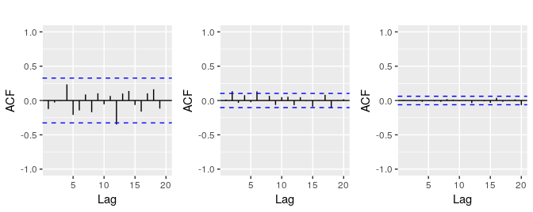

8.11 Exercises
Figure 8.25 shows the ACFs for 36 random numbers, 360 random numbers and 1,000 random numbers.
- Explain the differences among these figures. Do they all indicate that the data are white noise?
#> Warning: Ignoring unknown parameters: ylim, main #> Warning: Ignoring unknown parameters: ylim, main #> Warning: Ignoring unknown parameters: ylim, mainFigure 8.25: Left: ACF for a white noise series of 36 numbers. Middle: ACF for a white noise series of 360 numbers. Right: ACF for a white noise series of 1,000 numbers.
- Why are the critical values at different distances from the mean of zero? Why are the autocorrelations different in each figure when they each refer to white noise?
A classic example of a non-stationary series is the daily closing IBM stock price series (data set
ibmclose). Use R to plot the daily closing prices for IBM stock and the ACF and PACF. Explain how each plot shows that the series is non-stationary and should be differenced.For the following series, find an appropriate Box-Cox transformation and order of differencing in order to obtain stationary data.
usnetelecusgdpmcopperenplanementsvisitors
For the
enplanementsdata, write down the differences you chose above using backshift operator notation.For your retail data (from Exercise 3 in Section 2.10), find the appropriate order of differencing (after transformation if necessary) to obtain stationary data.
- Use R to simulate and plot some data from simple ARIMA models.
- Use the following R code to generate data from an AR(1) model with \(\phi_{1} = 0.6\) and \(\sigma^2=1\). The process starts with \(y_1=0\).
y <- ts(numeric(100)) e <- rnorm(100) for(i in 2:100) y[i] <- 0.6*y[i-1] + e[i]- Produce a time plot for the series. How does the plot change as you change \(\phi_1\)?
- Write your own code to generate data from an MA(1) model with \(\theta_{1} = 0.6\) and \(\sigma^2=1\).
- Produce a time plot for the series. How does the plot change as you change \(\theta_1\)?
- Generate data from an ARMA(1,1) model with \(\phi_{1} = 0.6\), \(\theta_{1} = 0.6\) and \(\sigma^2=1\).
- Generate data from an AR(2) model with \(\phi_{1} =-0.8\), \(\phi_{2} = 0.3\) and \(\sigma^2=1\). (Note that these parameters will give a non-stationary series.)
- Graph the latter two series and compare them.
- Consider the number of women murdered each year (per 100,000 standard population) in the United States. (Data set
wmurders).- By studying appropriate graphs of the series in R, find an appropriate ARIMA(\(p,d,q\)) model for these data.
- Should you include a constant in the model? Explain.
- Write this model in terms of the backshift operator.
- Fit the model using R and examine the residuals. Is the model satisfactory?
- Forecast three times ahead. Check your forecasts by hand to make sure that you know how they have been calculated.
- Create a plot of the series with forecasts and prediction intervals for the next three periods shown.
- Does
auto.arimagive the same model you have chosen? If not, which model do you think is better?
- Consider the total international visitors to Australia (in millions) for the period 1980-2015. (Data set
austa.)- Use
auto.arimato find an appropriate ARIMA model. What model was selected. Check that the residuals look like white noise. Plot forecasts for the next 10 periods. - Plot forecasts from an ARIMA(0,1,1) model with no drift and compare these to part (a). Remove the MA term and plot again.
- Plot forecasts from an ARIMA(2,1,3) model with drift. Remove the constant and see what happens.
- Plot forecasts from an ARIMA(0,0,1) model with a constant. Remove the MA term and plot again.
- Plot forecasts from an ARIMA(0,2,1) model with no constant.
- Use
- For the
usgdpseries:- if necessary, find a suitable Box-Cox transformation for the data;
- fit a suitable ARIMA model to the transformed data using
auto.arima(); - try some other plausible models by experimenting with the orders chosen;
- choose what you think is the best model and check the residual diagnostics;
- produce forecasts of your fitted model. Do the forecasts look reasonable?
- compare the results with what you would obtain using
ets()(with no transformation).
- Consider
austourists, the quarterly number of international tourists to Australia for the period 1999–2010. (Data setaustourists.)- Describe the time plot.
- What can you learn from the ACF graph?
- What can you learn from the PACF graph?
- Produce plots of the seasonally differenced data \((1 - B^{4})Y_{t}\). What model do these graphs suggest?
- Does
auto.arimagive the same model that you chose? If not, which model do you think is better? - Write the model in terms of the backshift operator, then without using the backshift operator.
- Consider the total net generation of electricity (in billion kilowatt hours) by the U.S. electric industry (monthly for the period January 1973 – June 2013). (Data set
usmelec.) In general there are two peaks per year: in mid-summer and mid-winter.- Examine the 12-month moving average of this series to see what kind of trend is involved.
- Do the data need transforming? If so, find a suitable transformation.
- Are the data stationary? If not, find an appropriate differencing which yields stationary data.
- Identify a couple of ARIMA models that might be useful in describing the time series. Which of your models is the best according to their AIC values?
- Estimate the parameters of your best model and do diagnostic testing on the residuals. Do the residuals resemble white noise? If not, try to find another ARIMA model which fits better.
- Forecast the next 15 years of electricity generation by the U.S. electric industry. Get the latest figures from https://goo.gl/WZIItv to check the accuracy of your forecasts.
- How many years of forecasts do you think are sufficiently accurate to be usable?
- For the
mcopperdata:- if necessary, find a suitable Box-Cox transformation for the data;
- fit a suitable ARIMA model to the transformed data using
auto.arima(); - try some other plausible models by experimenting with the orders chosen;
- choose what you think is the best model and check the residual diagnostics;
- produce forecasts of your fitted model. Do the forecasts look reasonable?
- compare the results with what you would obtain using
ets()(with no transformation).
- Choose one of the following seasonal time series:
hsales,auscafe,qauselec,qcement,qgas.- Do the data need transforming? If so, find a suitable transformation.
- Are the data stationary? If not, find an appropriate differencing which yields stationary data.
- Identify a couple of ARIMA models that might be useful in describing the time series. Which of your models is the best according to their AIC values?
- Estimate the parameters of your best model and do diagnostic testing on the residuals. Do the residuals resemble white noise? If not, try to find another ARIMA model which fits better.
- Forecast the next 24 months of data using your preferred model.
- Compare the forecasts obtained using
ets().
For the same time series you used in the previous exercise, try using a non-seasonal model applied to the seasonally adjusted data obtained from STL. The
stlf()function will make the calculations easy (withmethod="arima"). Compare the forecasts with those obtained in the previous exercise. Which do you think is the best approach?- For your retail time series (Exercise 5 above):
- develop an appropriate seasonal ARIMA model;
- compare the forecasts with those you obtained in earlier chapters;
- Obtain up-to-date retail data from the ABS website (Cat 8501.0, Table 11), and compare your forecasts with the actual numbers. How good were the forecasts from the various models?
- Produce a time plot of the sheep population of England and Wales from 1867–1939 (data set
sheep). - Assume you decide to fit the following model: \[ y_t = y_{t-1} + \phi_1(y_{t-1}-y_{t-2}) + \phi_2(y_{t-2}-y_{t-3}) + \phi_3(y_{t-3}-y_{t-4}) + e_t, \] where \(e_t\) is a white noise series. What sort of ARIMA model is this (i.e., what are \(p\), \(d\), and \(q\))?
- By examining the ACF and PACF of the differenced data, explain why this model is appropriate.
The last five values of the series are given below:
Year 1935 1936 1937 1938 1939 Millions of sheep 1648 1665 1627 1791 1797 The estimated parameters are \(\phi_1 = 0.42\), \(\phi_2 = -0.20\), and \(\phi_3 = -0.30\). Without using the
forecastfunction, calculate forecasts for the next three years (1940–1942).Now fit the model in R and obtain the forecasts using
forecast. How are they different from yours? Why?
- Produce a time plot of the sheep population of England and Wales from 1867–1939 (data set
- Plot the annual bituminous coal production in the United States from 1920 to 1968 (data set ).
- You decide to fit the following model to the series: \[y_t = c + \phi_1 y_{t-1} + \phi_2 y_{t-2} + \phi_3 y_{t-3} + \phi_4 y_{t-4} + e_t\] where \(y_t\) is the coal production in year \(t\) and \(e_t\) is a white noise series. What sort of ARIMA model is this (i.e., what are \(p\), \(d\), and \(q\))?
- Explain why this model was chosen using the ACF and PACF.
The last five values of the series are given below.
Year 1964 1965 1966 1967 1968 Millions of tons 467 512 534 552 545 The estimated parameters are \(c = 162.00\), \(\phi_1 = 0.83\), \(\phi_2 = -0.34\), \(\phi_3 = 0.55\), and \(\phi_4 = -0.38\). Without using the
forecastfunction, calculate forecasts for the next three years (1969–1971).Now fit the model in R and obtain the forecasts from the same model. How are they different from yours? Why?
- Install the rdatamarket package in R using
r install.packages("rdatamarket") - Select a time series from http://datamarket.com/data/list/?q=pricing:free. Then copy its short URL and import the data using
r x <- ts(rdatamarket::dmseries("shorturl")[,1], start=??, frequency=??)(Replace??with the appropriate values.) - Plot graphs of the data, and try to identify an appropriate ARIMA model.
- Do residual diagnostic checking of your ARIMA model. Are the residuals white noise?
- Use your chosen ARIMA model to forecast the next four years.
- Now try to identify an appropriate ETS model.
- Do residual diagnostic checking of your ETS model. Are the residuals white noise?
- Use your chosen ETS model to forecast the next four years.
- Which of the two models do you prefer?
- Install the rdatamarket package in R using
##Further reading
The classic text which popularized ARIMA modelling was Box and Jenkins (1970). The most recent edition is Box et al. (2015), and it is still an excellent reference for all things ARIMA. Brockwell and Davis (2016) provides a good introduction to the mathematical background to the models, while Peña, Tiao, and Tsay (2001) describes some alternative automatic algorithms to the one used by auto.arima().
References
Box, George E P, and Gwilym M Jenkins. 1970. Time Series Analysis: Forecasting and Control. San Francisco: Holden-Day.
Box, George E P, Gwilym M Jenkins, Gregory C Reinsel, and Greta M Ljung. 2015. Time Series Analysis: Forecasting and Control. 5th ed. Hoboken, New Jersey: John Wiley & Sons.
Brockwell, Peter J, and Richard A Davis. 2016. Introduction to Time Series and Forecasting. 3rd ed. New York: Springer.
Peña, Daniel, George C Tiao, and Ruey S Tsay, eds. 2001. A Course in Time Series Analysis. New York: John Wiley & Sons.